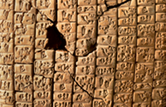

Lezione 2  Le antiche civiltà del Mediterraneo
Le antiche civiltà del Mediterraneo

I più antichi esempi di scrittura (anche se su questo primato gli storici discutono ancora) che ci sono pervenuti derivano dalla cultura sumera. Si ritiene che inizialmente i primi segni fossero sigilli impressi su tavolette d'argilla in funzione della registrazione di certi beni immagazzinati. Attorno al 3000 a.C. comparve la scrittura pittografica, in cui si rappresentava l'oggetto disegnando la sua stessa immagine: ad esempio, per rappresentare un cervo veniva disegnata la forma della sua testa. Dato che questi segni venivano tracciati con una canna su una tavoletta di argilla calda, essi non potevano essere molto complessi, ma tendevano anzi ad essere semplici, schematici. Fu così che la scrittura sumera intraprese una strada meno figurativa e più astratta, a differenza di quella egizia: disponendo di un supporto come il papiro, sul quale vi era la massima libertà di rappresentazione, quest'ultima non aveva alcun motivo di sveltire ed economizzare il processo di incisione. La punta della canna usata dai sumeri tendeva a produrre segni triangolari, a chiodo: fu così che nacque la scrittura cuneiforme. Solamente intorno al 2000 a.C. si passò infine a una rappresentazione che potesse dar conto di idee astratte: la scrittura a ideogrammi.